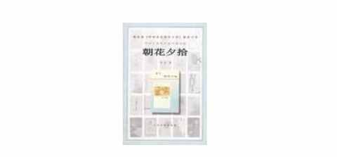
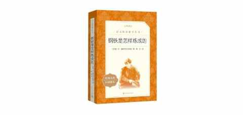
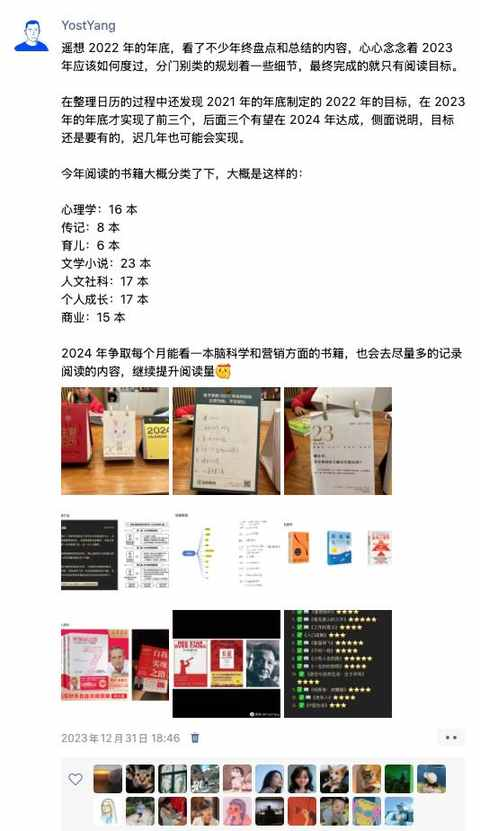

一位中年人的“执念”：我为什么坚持送书？
一、 萌芽于 童年
小时候家附近有一个新华书店，虽然经常去逛但极少买。
经济条件有限，而且新华书店的书也从不打折，里面的书都是按原价卖。
过年的时候即使有足以买下好几本书的压岁钱，也会想起来这些书是贵的，能不买就不买。

终于在小学的某一年过年有了压岁钱之后，买了一本鲁迅的《 朝花夕拾 》。
一个种子可能在这些时刻种下：并不是有多想看书，但想拥有！
二、实践于高中
印象中从高中开始的送书给同学，距离2025 年的当下有 20 年。
不过那时候送的极少，毕竟作为学生也没多少钱，即便是盗版书也都不便宜。
每年会在有过年有压岁钱的时间里面逛逛书店，主打一个过过眼瘾，真正买的时候寥寥。

有印象的是这本《钢铁是怎样炼成的》，因为当时和同学打赌，他说多久能看完，我不信，然后他上课看的时候被老师发现了。
赌的是什么已经忘了，好在书被没收后又被拿回来，他继续争分夺秒的看啊看，并在截止时间前看完了整本小说。
三、工作后频繁买书
11 年到上海实习，正是各种电商网站竞争火热的时候，在网上什么能买到越来越多的东西，包括书。
与买其他东西相比，网购完全超出预期的体验是：
网上买书比实体店便宜太多，基本上是标价的 5-6 折，100 块钱精打细算一点能买 4-5 本书，200 块钱结合满减绝对能买到 10 本以上。
自此，一发不可收拾，看到觉得不错的书籍之后，在各大电商网站搜索比价，然后加到购物车待 发工资的时候下单。
买书的习惯得以养成，看书的习惯并没有。
最有仪式感的事情是：收到书之后，拆掉塑封在扉页写上名字和日期。
四、为什么送书
不完全统计，这些年陆陆续续应该有送出去 200多本实体书，接下来依然会保持这个习惯。
关于为什么送书，可能是基于下面的几个缘由：
① 书是好东西
打心里这么认为的，从小到大这个想法都没有变过。
把好东西送给他人，逻辑上十分合情合理。

2023 年开始密集看书之后，更坚定了这一想法。
② 无负担
书不贵，送的人和收的人都没有负担。
③ 增人玫瑰，手有余香
看或不看都行， 看了会有收获，不看也没有任何损失，有很大可能在某一个契机下会对方翻开这本书。